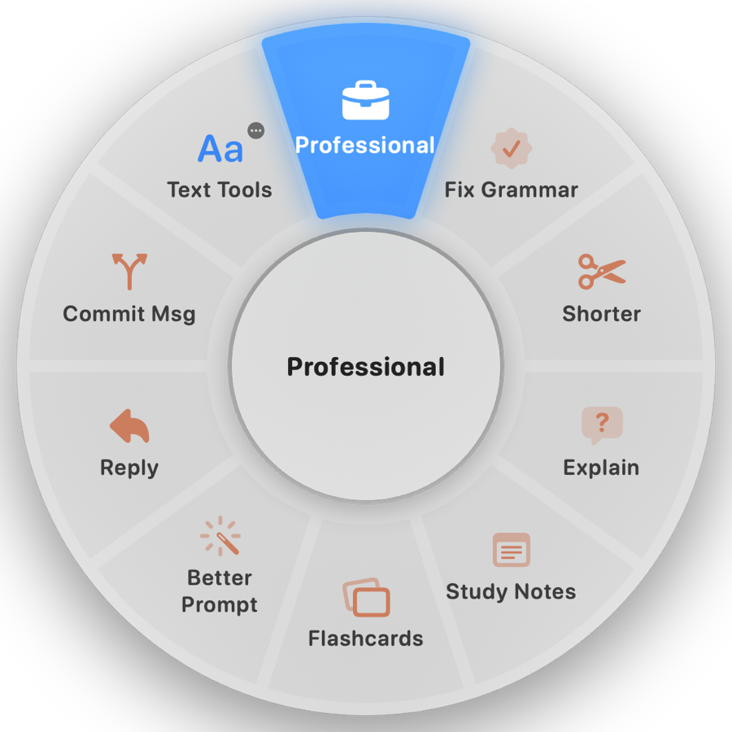
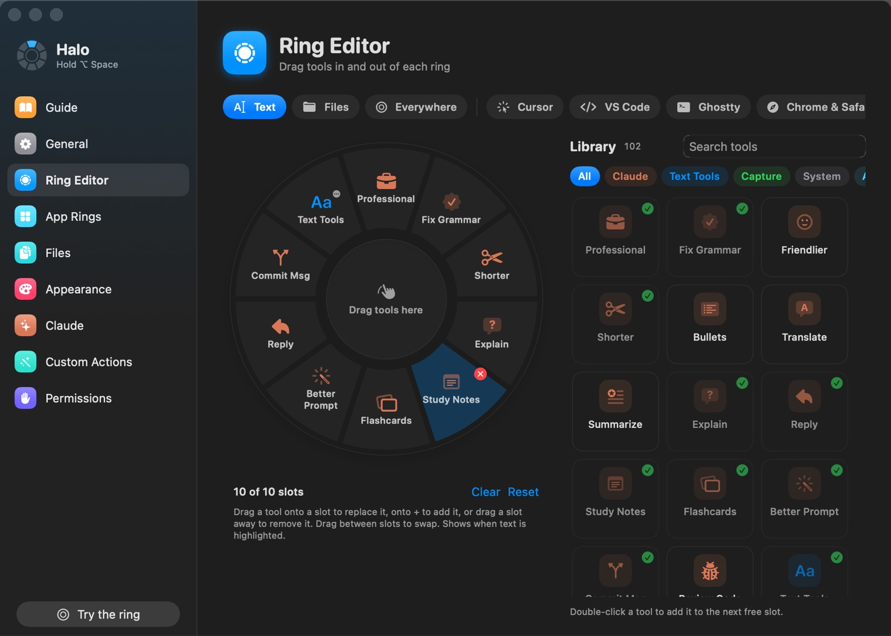

Halo
A radial action ring for your Mac.
Hold ⌥Space anywhere, flick toward an action, let go.
One gesture. Every action.
Halo opens at your cursor and fits whatever you're pointing at: highlighted text, files in Finder, or the app you're in. Each action sits in the same direction every time, so it becomes muscle memory.
Hold ⌥Space
The ring opens right where your pointer is.
Flick
Move toward an action. The slice lights up as you cross it.
Let go
The action runs. Let go in the middle to cancel.
Rewrite anything, right where you typed it.
Highlight a sloppy draft and flick to Professional. Halo swaps in the polished version, in any app.
- Rewrites: Professional, Fix Grammar, Shorter, Friendlier, Translate
- Answers: Explain, Reply, Summarize
- Studying: Markdown study notes and Anki-ready flashcards
- On your Claude plan: runs through Claude Code, so there's no API bill

Built for developers.
In VS Code, Cursor and Ghostty the ring becomes that app's own shortcuts. Open the terminal, comment a line, start Claude Code, all without remembering a single key combo.
- Editors: Commands, Go to File, Terminal, Format, Comment, Source Control
- Ghostty: start Claude Code, split, zoom, jump between prompts
- Git: highlight a diff, get a commit message
Help with texting.
In Messages, rewrite the reply you're typing, or ask what their last text actually meant. No highlighting needed.
- Tone: Funnier, Friendlier, Serious, Flirty
- Context: Explain their last text, or sum up the whole chat
Convert files without opening an app.
Select files in Finder and Convert offers only the formats they can actually become, using the converters built into macOS.
- Images: JPG, PNG, HEIC, AVIF, PDF, ICO and more
- Documents, audio and video: Word, PDF, M4A, WAV, MP4, GIF
- Also: compress, resize, remove backgrounds, copy text from images, merge PDFs, zip
A ring for every app.
Ready-made rings for Cursor, VS Code, Ghostty, Chrome and Safari, Messages, Notion, Obsidian and Zoom, using each app's own shortcuts. Add a ring for any other app in a minute.
Make it yours.
Drag any of 100+ tools onto any ring. Add your own actions: Claude prompts, keyboard shortcuts, links, macOS Shortcuts, shell commands and apps.

Yours, on your Mac.
Local by default
Text tools and file conversions run on your Mac with macOS's own converters. Results are saved next to the original, never over it.
Claude only when you ask
Claude actions send only what you selected, through Claude Code or your own API key. Nothing else leaves your Mac.
No account, no tracking
No sign-up and no analytics. The only other request is a daily check on GitHub for a new version.
Install in a minute.
Halo is free and isn't on the App Store, so there's one extra click the first time.
Download and move it to Applications
Download Halo.zip, unzip it and drag Halo.app into Applications. Open it from there.
Allow it to open
Halo isn't notarized by Apple, so macOS says it can't verify the developer. Open System Settings › Privacy & Security, scroll down and click Open Anyway. You only do this once.
Follow the Guide
A Guide opens and ticks off each step: allow Accessibility (so Halo can read your selection and paste results), and click OK when macOS asks if Halo can control Finder.
Optional: sign in to Claude
For the Claude actions, install Claude Code and run
claudeonce to sign in, or paste an Anthropic API key in Halo's settings. Everything else works without it.
Questions.
Is Halo really free?
Yes. It's open source under the MIT license, with no paid tier. The Claude actions use your existing Claude plan through Claude Code, or your own API key if you'd rather.
Why does macOS say it can't verify the developer?
Apple's notarization requires a paid developer account, which this free project doesn't have. The code is all on GitHub, and the release is built from it automatically by GitHub Actions. Click Open Anyway in Privacy & Security once and macOS remembers.
Do I need Claude?
Only for the Claude actions (rewrites, explanations, study notes, commit messages). Text tools, file conversions, screenshots and every app ring work without it.
Why does it need Accessibility?
To read the text you've highlighted, paste results back, and press the app shortcuts in app rings. Halo only reads your selection when you open the ring.
How do I update?
Halo's menu shows Update to Halo … when a new version is out. Download it, replace Halo.app in Applications, then turn Halo off and on again in Privacy & Security › Accessibility. Your settings carry over.
How do I uninstall it?
Turn off Open at login, quit Halo from its menu and drag it to the Trash. The README has the commands to clear its settings and permissions too.
Does it work on Intel Macs?
Yes. Halo is a universal app for Apple silicon and Intel, on macOS 14 Sonoma or later.
Something isn't working.
Open How to Use Halo from its menu for fixes to the common problems, or open an issue on GitHub.